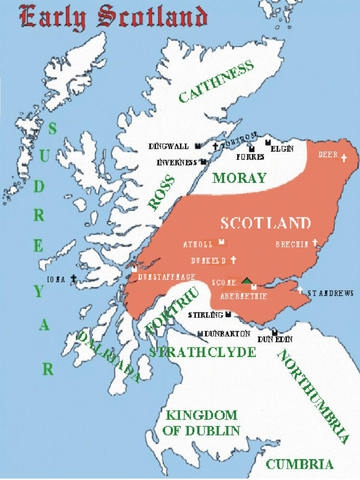

1523581587 Frakok Moddansdottir of Caithness * 1064 † 1138
Blev högst 74 år
3047163174 Earl Moddan MacDonachaidh of Caithness * omkring 1010 Atholl, Perthshire, Scotland † omkring 1040 Mormaer (Jarl) av Caithness Blev ca 30 år

3047163175 Princess Beatrice (Bethoc) of Atoll of Scotland * 984 Atholl, Perthshire, Scotland † omkring 1045 Atholl, Perthshire, Scotland Prinsessa av Scotland Blev ca 61 år